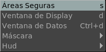

El Menu de la Vista

La Ventana de la Vista permite permutar las areas seguras de títulos y acción.
La opción de Ventana de Display permite alternar la Ventana de Area de Display cuando esta difiere de la Ventana de Datos. Esto es una característica de imágenes de OpenEXR.
La opción de Ventana de Datos permite alternar la presencia del cuadrado alrededor de la ventana de datos de una imagen OpenEXR, cuando dicha ventana difiere de la Ventana de Display.
El submenú de la Máscara permite alternar máscaras de film y fotograficas para mostrar tus películas en un formato como el cine, por ejemplo. Este setting funciona en conjunto con el de menú Preferencias->Vista.
El HUD (Heads Up Display) permite permutar alguna informacion de texto de la ventana de la vista. Usted puede mostrar nombre, directorio, cuadro, cuadros no mostrados (CNM), cuadros por segundo (CPS), etc. Este seteo puede ser puesto permanentemente en el menú Preferencias->Vista.